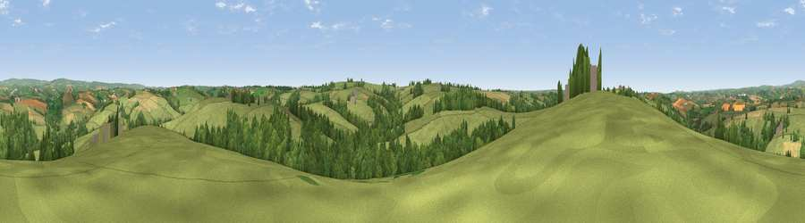

Viewpoint near Romansleigh
#11010 in England · top 14% of its area beats it · near RomansleighWhere it is
The exact computed spot (SS 71675 20875). Click the marker for map links.
The view, rendered

A 360° render of this exact spot computed from the terrain model, tree cover and land cover — summer colours, afternoon light, calibrated against photographs of famous viewpoints. Real trees, hedges and buildings will differ in detail.
The panorama
Grey silhouette: terrain skyline in each direction (720 bearings, Earth curvature and refraction included). Dashed green: skyline with trees (+15 m) and buildings (+8 m) as obstacles. Blue strip: how far the ground is visible on each bearing.
Where the view opens
Wedge length = distance to the farthest visible ground on that bearing (vegetation-aware). Rings at 10, 25 and 50 km.
What fills the view
66% grassland · 24% woodland · 10% cropland
Angular shares of the visible panorama (visual magnitude), not map area. Landscape diversity 0.38 (0–1 Shannon).
Key numbers
More beautiful places nearby
The staircase of upgrades: each row has a higher view potential than everything closer. Driving times are estimates from straight-line distance, calibrated against real road routing — check an actual route before setting out.
| Place | Direction | Drive | Score |
|---|---|---|---|
| Viewpoint near George Nympton | W · 2 km | ~6 min | 65.8 |
| Viewpoint near Stags Head | NNW · 8 km | ~16 min | 68.1 |
| Yollacombe Hill | NW · 11 km | ~21 min | 70.2 |
| Viewpoint near Landkey | WNW · 15 km | ~27 min | 74.0 |
| Codden Hill | WNW · 16 km | ~28 min | 81.3 |
| Viewpoint near Luccombe | NE · 27 km | ~43 min | 84.5 |
| Viewpoint near Martinhoe | NNW · 28 km | ~45 min | 86.5 |
| Holdstone Hill | NNW · 29 km | ~45 min | 90.2 |
50.97295, -3.82910 · source: screening · position refined by local search. Computed location — check access rights before visiting.